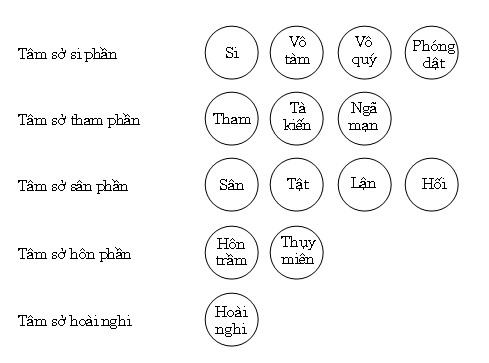
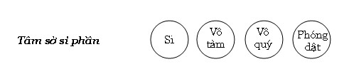

|
BuddhaSasana Home Page |
Vietnamese, with Unicode VU Times font |
Tâm Sở Vấn Đáp
Phần II - Tâm sở Bất thiện
(Akusalacetasikā)
Tỳ
kheo Chánh Minh
Chùa Bồ Đề, Vũng Tàu
|
Xin lưu ý: Cần có phông UnicodeViệt-Phạn VU Times cài vào máy để đọc các chữ Pàli. |
||||||||||||||||||||||||
|
[01] NHỮNG CHỮ VIẾT TẮT
- ooOoo- PHẦN II
TÂM SỞ BẤT THIỆN. 68- HỎI: Vì sao gọi là tâm sở bất thiện? ĐÁP: Tâm sở bất thiện là những tâm sở tạo ra những điều ác xấu, phiền não (kilesa), ô nhiễm (māla) khiến chúng sinh rơi vào khổ. Pāli có giải thích: Akusalehi yuttanti = akusalaṃ: Hợp với những điều không tốt đẹp gọi là bất thiện. Các Ngài giải thích bất thiện có 5 nghĩa:
Gọi là bất thiện vì những tâm sở này có khuynh hướng tà vạy, khiến tâm lầm lạc rơi vào sự áp chế của chúng, để rồi cho quả khổ sau này. Đức Phật có dạy:
Sự tà vạy ở đây ám chỉ 10 điều ác là: Sát sanh, lấy của không cho, tà hạnh trong dục, nói dối, nói ác, nói đâm thọc, nói nhãm nhí, tham ác, sân ác và tà kiến ác.
69- HỎI: Hãy kể ra những tâm sở bất thiện (akusalacetasikā)? ĐÁP: Tâm sở bất thiện gồm có 14 thứ chia thành năm nhóm như sau: 1- Nhóm Si phần có 4 tâm sở là:
Nhóm Si phần này còn gọi là tâm sở bất thiện biến hành vì hiện khởi trong tất cả tâm bất thiện.[2] 2- Nhóm Tham phần gồm 3 tâm sở là:
Những tâm sở này có chung đặc tính là “dính mắc với cảnh”, không muốn xa lìa cảnh, chúng chỉ hiện hữu trong tâm tham, nên gọi là “nhóm tham”. 3- Nhóm Sân phần gồm 4 tâm sở là:
Những tâm sở này có chung đặc tính là “không hài lòng đối tượng (cảnh)”, chúng chỉ hiện hữu trong hai tâm sân, nên gọi là “nhóm sân”. 4- Nhóm Hôn phần gồm 2 tâm sở là:
Hai tâm sở này có chung đặc tánh làm cho các pháp đồng sanh trở nên yếu đuối, lười nhát, rơi vào thụ động. Nhóm Hôn phần chỉ hiện khởi trong những tâm bất thiện có “sự kích thích” (akusalasasaṇkhārikacitta), tức là chỉ có trong bốn tâm tham hữu trợ và tâm sân hữu trợ mà thôi. 5- Tâm sở Hoài nghi (vicikicchācetasika). Tâm sở này chỉ có trong tâm Si hợp hoài nghi. Biểu đồ:  A- Tâm sở si phần. 70- HỎI: Vì sao bốn tâm sở: Si, Vô tàm, Vô quý và Phóng dật, được gọi là tâm sở bất thiện biến hành (sabha – akusala sādhāranā)? ĐÁP: a- Về tâm sở Si. Do mê muội, lầm lạc, nên tâm rơi vào ảnh hưởng bất thiện như tham, sân, ganh tỵ, bỏn xẻn, hoài nghi... từ đó khiến chúng sanh làm tất cả những điều ác. Những ác pháp được thực hiện là do tâm bất thiện điều sử, trong đó có Si là cội rễ (mūla). Trong tất cả các pháp bất thiện thì vô minh là bất thiện lớn nhất, Đức Phật có dạy: “Vô minh là đỉnh đầu Và: “Này các tỷ kheo, phàm có những pháp bất thiện nào, tất cả đều lấy vô minh làm cội rễ (mūla).”[4] b- Về tâm sở Vô tàm và Vô quý. Do không hổ thẹn (ahirika) khi thực hiện việc ác(tội lỗi), đồng thời không hề run sợ (anottappa) hậu quả của việc làm tội lỗi, nên chúng sanh thực hiện được mọi điều ác. “Này các tỷ khưu! Hai pháp đen( ke kaṇhā), thế nào là hai? Không hổ thẹn (tội lỗi) và không ghê sợ (tội lỗi). Các pháp này, này các tỷ kheo là hai pháp đen. Này các tỷ kheo, hai pháp này là hai pháp trắng, thế nào là hai? Hổ thẹn tội lỗi và Ghê sợ tội lỗi là hai pháp trắng. Này các tỷ khưu, hai pháp trắng này che chở cho thế gian. Nếu hai pháp trắng này không che chở cho thế gian thời không chỉ được (na paññāyetha) đây là mẹ hay là em, chị của mẹ hay đây là vợ của anh hay em của mẹ, hay đây là vợ của thầy hay đây là vợ của các vị tôn trưởng. Và thế giới sẽ đi đến hỗn loạn (sambhedaṃ), như giữa các loài dê, loài gà vịt, loài heo, loài chó, loài giả can....”[5] Đoạn kinh trên cho thấy, nhờ có Hổ thẹn tội lỗi và Ghê sợ tội lỗi nên thế gian này không rơi vào hổn loạn, chính không hổ thẹn tội lỗi và không ghê sợ tội lỗi khiến thế gian này đi đến hổn loạn, không có nề nếp rõ rệt, không có sự phân biệt rõ ràng. Nói cách khác, hai tâm sở Vô tàm và Vô quý hành động theo bản năng thiên về khuynh hướng của tham, sân. Do vậy, hai tâm sở này được xếp vào tâm sở bất thiện biến hành. c- Về tâm sở Phóng dật. Tâm yên tịnh khiến thân - ngữ yên tịnh, bởi “ý làm chủ, ý tạo” [6], khi ấy chúng sanh không thể làm điều ác. Như lời Phật dạy: “Santaṃ tassa mamaṃ hoti. “Tâm trầm tĩnh, ngôn ngữ trầm tĩnh, hành động trầm tĩnh...”.[7] Khi nào tâm loạn động, khi ấy tâm mới hướng về bất thiện, chính tâm sở Phóng dật (uddhacca) làm cho tâm trí con người loạn động, khiến cho những bất thiện pháp xuất phát từ tham, sân... hiện bày rõ rệt. Do đó tâm sở Phóng dật (uddhacca) có mặt trong tất cả bất thiện tâm. Pāli có kệ rằng: Akusalesu pana moho “Si, Vô tàm, Vô quý, Phóng dật. Bốn tâm sở này là bất thiện biến hành, những tâm sở này được tìm thấy trong tất cả 12 tâm bất thiện”[8]. Biểu đồ tâm sở Si phần như sau:  71- HỎi: Thế nào là tâm sở Si (moha cetasika)? ĐÁP: Moha (Si) từ ngữ căn là muh là mê mở, lầm lạc. Si là trạng thái tối tăm, không biết điều đáng biết, biết điều không đáng biết. Si giống như người đi trong đêm tối, không thể nhận định được cảnh quang, hay giống như người mù bẩm sinh không hề biết được ánh sáng, màu sắc. Si đối nghịch với trí tuệ . Đức Ānanda có trả lời cho du sĩ Channa rằng: “... Si, thưa hiền giả, làm thành mù, làm thành không mắt, làm thành không trí, đoạn diệt trí tuệ, dự phần vào tổn não, không đưa đến Nípbàn”[9]. Pālicó giải như sau: Arammaṇa muhatīti = moho: “mê tối trong cảnh gọi là si”. 72- HỎI: Tứ ý nghĩa của tâm sở Si ra sao? ĐÁP: Tứ ý nghĩa của Si là: - Trạng thái: Không hiểu biết (añāṇalakkhaṇo) hay không biết điều đáng biết (andhabhava lakkhaṇo). - Phận sự: Ngăn che đặc tính của cảnh (ālamba sabbāvecchadāna raso). - Thành tựu: Có sự tối tăm (asammāpatipatti paccupaṭṭhāna). Nhân cần thiết: Không sanh khởi tác ý đúng (ayoniso manasīkāra padaṭṭhāno). Giảỉ thích: - Trạng thái: Tâm sở Si có trạng thái ngược với trí tức là có sự không hiểu biết. “Không hiểu biết” ở đây chỉ cho sự không thông hiểu về các pháp thực tính (sabhāva dhamma) đang có trong tâm hay đang làm cảnh cho tâm. Tức là không hiểu về tam tướng của pháp đang làm cảnh cho tâm. Hoặc không hiểu về bốn sự thật (sacca): “đây là khổ, đây là nhân sanh khổ, đây là sự diệt khổ, đây là con đường đưa đến diệt khổ.” Chính trạng thái “không hiểu biết này” khiến tâm sở Si trở thành Si ác khi đi chung với tham ác hay sân ác qua các hành động của thân, ngữ, ý. Sở dĩ, tâm sở Si trở thành Si ác vì nó “hoạt động” theo sức mạnh của tham, sân. Ví như người không suy xét, làm theo lời chỉ dẩn sai quấy của con cháu, trở thành kẻ trộm cắp, giết người... Tuy tâm sở Si là gốc rễ của ác, bất thiện pháp, nhưng tâm sở Si không trở thành Si ác khi không phối hợp với tham - sân hay tà kiến, vì nó có trạng thái mê mờ, muội lược. Chính sự mê muội không hiểu biết trong cảnh (không nhận định rõ cảnh) khiến tâm sở Si “hành động mù quáng” theo sự điều khiển của tham, sân và tà kiến, khi ấy nó được gọi là si ác. - Phận sự: Khi tâm sở Si hiện khởi, nó ngăn che ba đặc tính (sabhāva) của cảnh là vô thường, khổ, vô ngã. Tâm sở Si làm cho tâm chỉ thấy “đây là tốt đẹp” hoặc “đây không là tốt đẹp”, tâm không thấu rõ thực tướng của cảnh, cũng vì do si che lấp, ví như người nhìn bức tranh qua làn vải. Tâm không thấu rõ thực tướng của cảnh ám chỉ “không thấy được sự sanh diệt của các pháp hữu vi” đang hiện hữu. Đây chính là phận sự của tâm sở Si. - Thành tựu: Tâm sở Si che lấp cảnh, khiến tâm không nhận thức sự sinh diệt của pháp hữu vi, không nhận thức được nguy hại của các trần cảnh: Sắc, thinh, khí, vị, xúc, pháp. Chính vì không thấy được nguy hại của trần cảnh hoặc của ác pháp, nên chúng sanh hành động, nói hoặc suy nghĩ theo cách thông thường, không có sự suy xét sâu xa. Như người mẹ khi tức giận con thường mắng chửi con, vì cho đó là “việc” bình thường ... Đức Phật có dạy:
Hay: “Này các tỳ khưu, các Sa môn hay Bà la môn nào, không như thật biết rõ vị ngọt là vị ngọt, nguy hại là nguy hại, xuất ly là xuất ly, các Sa môn – Bà la môn ấy, này các tỷ kheo, đối với Ta không được công nhận là Sa môn trong các hàng Sa môn, không được công nhận là Bà la môn trong các hàng Bà la môn..”[11] Những điều trên là sự thành tựu của tâm sở Si. - Nhân cần thiết: Nhân cần hiết để Si sanh khởi, là “không sanh khởi tác ý đúng– ayoni so manasikāra” (Chữ ayoni là không sinh khởi, so là đúng đắn, manasikāra là việc làm (từ) ý). Tức là: “Không chú ý đúng phương pháp”. Ở đây, chú ý đúng phương pháp là chỉ cho “hướng tâm về điều thiện”, “không chú ý đúng phương pháp” là chỉ cho “hướng tâm về điều ác”. Cảnh dù tốt hay xấu, nếu như không được hướng dẫn, tâm sẽ lao theo chiều hướng sái quấy theo thói quen đã tích lũy lâu đời. Nhờ có chú ý đúng theo phương pháp, tâm đi theo chiều tốt đẹp, khi ấy tâm sở Si không có cơ hội sinh lên. Nhưng pháp nào làm việc hướng tâm ấy? Chính tâm hướng ý môn (manodvāravajjanacitta) thực hiện vai trò này. Nên ghi nhận “tác ý đúng“ở đây không phải là trí, mà là hường về điều thiện, “không tác ý đúng” là hướng về điều ác. Hai điều này do tâm Hướng ý môn “chú ý” đến, từ đó tạo thành những tâm đổng lực (javanacitta) thiện hay bất thiện. Nói cách khác “không khởi sanh tác ý đúng” trong trường hợp này là ám chỉ tâm Hướng ý môn không hướng về điều thiện, đó là nguyên nhân gần nhất khiến tâm sở Si sanh khởi. Ngược lại, nếu tâm Hướng ý môn hướng về điều thiện thì tâm sở Si không thể sinh lên. Đức Phật có dạy:
72- HỎI: Si và Vô minh giống nhau hay khác nhau? ĐÁP: Theo nghĩa thông thường thì Vô minh cũng là Si, là “không hiểu biết”. Tuy nhiên, giữa Vô minh và Si có rất nhiều sai biệt. Để nêu rõ sự sai biệt giữa Vô minh và Si, Đức Phật dùng từ Vô minh để chỉ cho tính “rộng rãi” của các bất thiện pháp, như: Vô minh lậu (avijjāsava)[13], Vô minh bộc (avijjāgha), Vô minh ách (avijjāyoga)[14], Vô minh tùy miên (avijjānasaya)... Nói tóm lại, khi đề cập đến những nhân duyên khiến tâm bị ô nhiễm, Đức Phật dùng từ avijjā, còn nói về những căn bản bất thiện thì Ngài dùng Si. “Này các tỳ kheo, có ba căn bản (mūla) bất thiện. Thế nào là ba? Tham là căn bản bất thiện, Sân là căn bản bất thiện, Si là căn bản bất thiện”.[15] Hay: “Này Bàlamôn, bị si làm cho mê mờ, bị si chinh phục, tâm bị xâm chiếm nên làm ác hạnh về thân, ác hạnh về lời nói, ác hạnh về ý...”[16] Hoặc là: “Này các tỷ khưu, số ít là các chúng sanh đầy đủ cặp mắt trí tuệ của bậc Thánh. Và nhiều hơn là các chúng sanh bị chìm đắm trong vô minh, si ám”[17]. Đoạn kinh trên, Đức Phật dùng hai từ “vô minh”, “si ám”, đã nói lên tính khác biệt của vô minh và si. Nguyên ngữ của moha (si) xuất phát từ ngữ căn muh là mê muội, đần độn, lầm lạc. Còn Vô minh là avijjā = na + vijjā; vijjā từ ngữ căn vid là trí (ñāṇa) hiểu biết, sáng suốt, nên avijjā là không hiểu biết, không sáng suốt, không thông minh. Tuy “mê muội, đần độn” cũng đồng nghĩa như “không hiểu biết”, nhưng rõ ràng “mê muội” có tính đậm đặc hơn “không hiểu biết”. Vì rằng: “không hiểu biết chưa hẳn ngu muội, nhưng ngu muội thì rõ ràng không hiểu biết” Khác nhau về ý nghĩa thực tính: Bốn ý nghĩa của Vô minh là: - Trạng thái: không có trí (añāṇa lakkhaṇa). - Phận sự: làm cho tự mình cùng các pháp đồng sanh mê muội (samoha rasa). - Thành tựu: che khuất bản thể tướng (ohādana paccupaṭṭhāna). - Nhân cần thiết: có pháp lậu (asāvadhamma padaṭṭhāna). So sánh giữa 4 ý nghĩa của tâm sở Si và Vô minh, chúng ta thấy: “về thành tựu và nhân cần thiết” của chúng khác nhau. Tâm sở Si có thành tựu là “tự tối tăm”, còn Vô minh thì “che khuất bản thể tướng các pháp”, khiến các pháp ấy trở nên tối tăm. Ví như sơn đen (si) và vật bị sơn đen (ví như vô minh). Nhân cần thiết của Vô minh là pháp “ngâm tẩm –asāva”, trái lại nhân cần thiết của Si chỉ là “không sinh khởi tác ý đúng”. Trong kinh Nhất thiết lậu hoặc (sabhāsavasutta) ở Trung bộ thì: nhân sanh các pháp ngâm tẩm (āsava dhamma) là “không khởi sinh tác ý đúng - ayoni so manasikāra”. Như vậy Vô minh từ gốc si hình thành. Nói cách khác: Si có tính “đậm đặc hơn vô minh”. Có những câu giải tự về Vô minh như sau: - Veditabbaṃ karotīti = avijjā. “Không biết những pháp đáng biết (như ngũ uẩn, bốn đế, 12 xứ, 18 giới...) gọi là Vô minh. - Vijjamāne nayavāpetīti = avijjā “Biết những pháp không đáng biết, gọi là vô minh”. Tức là biết những pháp do định đặt (paññatti - Chế định) không có thực tính pháp. Si ví như người mù chữ, trái lại, Vô minh ví như người mới biết đọc chữ, nên nhầm lẫn trong các mẫu tự. Hay, Si ví như người mù ở trong rừng muốn tìm đường ra, vì không biết phương hướng nên tiếp tục bị lạc đường. Còn Vô minh ví như người biết phương hướng mà vẫn đi lạc đường do nhầm lẫn hướng Đông là hướng Tây, hướng Nam là hướng Bắc.... Sự lầm lạc của Vô minh do tưởng (saññā) dẫn đầu. Như lời Đức Phật dạy: “Người tưởng phi
pháp là đúng pháp với việc phi pháp... Đây là sự lầm lạc của Vô minh. Hay: “Hai pháp này, này các tỷ
kheo, đưa đến hỗn loạn (mê mờ) (sammosāya) và biến mất của Diệu pháp.
Thế nào là hai? Còn về sự mê muội của Si thì: “Người có phạm tội nhưng không thấy có phạm tội”[20]. Khác nhau về phạm vi hoạt động: Tâm sở Si chỉ có ở trong bất thiện, trái lại Vô minh bao trùm cả tam giới. Nói cách khác, tâm sở Si tác động đến các pháp đồng sanh, còn vô minh tác động đến tất cả các pháp bằng gián tiếp ( che khuất bản thể tướng của cảnh). Khi tác động trực tiếp thì Vô minh chính là Si, khi tác động các pháp bằng gián tiếp thì là vô mimh. Thanh niên Ajita có hỏi Đức Phật: “Thế nào gọi là đầu?”. Đức Phật trả lời: “Vô minh là đỉnh đầu”. Và khi Ajita hỏi: “Do gì, đời bị che” Đức Phật đáp: “Đời bị vô minh che”[21]. Theo kinh Tiểu Xiển minh (cūlaniddesa sutta), Vô minh gọi là đầu, vì Vô minh khiến chúng sanh mãi trầm luân trong tam giới, luôn bị tái sanh vào tam giới. Như thế rõ ràng, Vô minh làm cho chúng sanh khi tạo phước thiện “bị lầm lạc” đắm đuối trong nhàn cảnh, rơi vào luân hồi khổ. Trái lại, Si lại dẫn dắt chúng sanh rơi vào khổ cảnh, tái sanh vào địa ngục giới, bàng sanh giới, ngạ quỷ giới. Và câu trả lời của Đức Phật “đời bị Vô minh che” càng làm rõ nghĩa Vô minh. Cái gì là đời? Kinh Tiểu Xiển minh giải thích: Đời là: “địa ngục giới, ngạ quỷ giới, nhân giới, ma giới, thiên giới, phạm thiên giới, Uẩn thế gian (khandhaloka), Xứ thế gian (āyatanaloka), Giới thế gian (dhātuloka)”. Lại nữa, trong phần Duyên hệ của bộ Mahā Paṭṭhāna (Đại xứ) trong tạng Luận có ghi: “Kusalo dhammo akusalassa dhammassa ārammane paccayena paccayo”. “Pháp thiện trợ pháp bất thiện = cảnh duyên” Theo Sớ giải thì người bố thí, trì giới, tu thiền khi nhớ lại có thể phát sanh ngã mạn, tham ái, phóng dật.. Tức là khi ấy có Vô minh che mờ khiến tâm người ấy rơi vào bất thiện [22]. Trong Lý duyên khởi (paṭicca samuppāda), có ghi: “Avijjā paccayā saṇkhārā: Vô minh duyên cho Hành”. Bản Sớ giải có giải thích về sáu loại Hành (saṅkhāra), trong đó có: Phi phúc hành (apuññābhisaṅkhāra), phúc hành (puññābhisaṅkhāra) và bất động hành (aneñjābhisaṅkhāra). Tâm sở Tư có trong 12 tâm bất thiện, gọi là phi phúc hành. Tâm sở Tư có trong tâm Đại thiện hay tâm thiện Sắc giới, gọi là Phúc hành. Tâm sở Tư có trong tâm thiện Vô sắc giới, gọi là Bất động hành.[23] Như vậy, rõ ràng Vô minh cũng làm duyên cho thiện pháp được, chỉ có điều là: “Dẫn chúng sanh rơi vào khổ luân hồi”. Si ví như giọt dầu đen rơi xuống nước, Vô minh ví như sự lan tỏa rộng trên nước của giọt dầu ấy. Khác nhau về năng lực: Si có năng lực vững mạnh hơn Vô minh, Si tạo ra thân ác, ngữ ác, ý ác. “Này Bàlamôn, bị si làm cho mê mờ, bị si chinh phục, tâm bị xâm chiếm, nên làm ác hạnh về thân, ác hạnh về lời, ác hạnh về ý”[24]. Còn Vô minh chỉ làm cho tâm bị ô nhiễm, cấu uế (malā), khi tâm đắm chìm trong ô nhiễm thì si hình thành rõ rệt trở thành cội rễ (mūla). Và trong tất cả cấu uế, cấu uế lớn nhất là Vô minh. “Này các tỷ kheo, không đọc tụng là cấu uế của Thánh điển (mantā). - Không thức dậy (anutthāna) là cấu uế của nhà. - Biếng nhác là cấu uế của dung sắc - Phóng dật là cấu uế của phòng hộ. - Tà hạnh là cấu uế của nữ nhân. - Xan tham là cấu uế của bố thí. - Các pháp ác bất thiện là cấu uế của đời này và đời sau. - Nhưng này các tỷ kheo, có cấu uế lớn hơn các cấu uế. Vô minh là cấu uế lớn nhất [25]. Nói cách khác, về năng lực dẫn chúng sanh rơi vào khổ cảnh thì si có năng lực mạnh hơn vô minh, vô minh chỉ đưa chúng sanh rơi vào khổ luân hồi nhưng không ngăn cản chúng sanh tái sanh về nhàn cảnh, trái lại Si ngăn cản chúng sanh tái sanh vào nhàn cảnh. Nhưng mảnh lực chịu khổ lâu dài thì vô minh dai dẳng hơn si, khổ trong khổ cảnh còn có thời gian chấm dứt, nhưng khổ luân hồi còn mãi mãi cho đến bao giờ chấm dứt được vô minh. Lại nữa, trong đời sống bình nhật khi tạo thiện nghiệp thì không có si, nhưng có vô minh làm cảnh, che lấp sự khổ trong luân hồi. Như người tạo phước mong sanh về cõi trời... 73- HỎI: Thế nào là tâm sở Vô tàm (ahiri cetasika)? ĐÁP: Chữ Ahirika = na + hirika: không hổ thẹn. Nên ahirika được dịch là “không hổ thẹn (tội lỗi)”, hay vô liêm sĩ ( vô tàm). Tâm sở Vô tàm là loại tâm sở không thấy hổ thẹn khi làm tội lỗi, trái lại còn tự hào, lừng lẫy khi nó đi chung với tà kiến hoặc ngã mạn. Tâm sở Vô tàm ví như người xu nịnh không cảm thấy xấu hổ khi bị chê trách, trái lại y cho đó là việc cần phải làm, là “tri thời, là biết cách sống”... Hay ví như con heo thích thú khi nằm lăn trên phẩn của chính nó. Pāli có giải thích rằng: “Na hiriyati na lajjiyati = ahiriko. Không xấu hổ, không có lương tâm, gọi là không hổ thẹn (tội lỗi)”. “Không hổ thẹn” có hai cách: “Không hổ thẹn với sở hành”: Như những du sĩ lỏa thể, họ cho đó là việc tự nhiên, không có gì đáng e thẹn (đây là tâm sở Vô tàm khi đi chung với tà kiến). Tức là không hổ thẹn theo đời (loka). Lẽ thường, trong thế gian có những quy định riêng về tội lỗi, thế gian có những cấm kỵ theo quy ước như: Loạn luân là điều mà thế gian chê trách, nữ nhân ngoại tình là điều thế gian không chấp nhận... Đối những cấm kỵ của thế gian, tâm sở Vô tàm khi sinh khởi, chúng sinh ấy bất chấp và rơi vào những tội lỗi do thế gian định đặt. “Không hổ thẹn với tội lỗi”: đối với những thân ác, ngữ ác không hề cảm thấy xấu hổ, trái lại cho đó là việc tất nhiên, là luật sinh tồn, “mạnh được yếu thua”... Không hổ thẹn với tội lỗi lại có hai cách: Không hổ thẹn đối với tự ngã (atta) và không hổ thẹn đối với pháp (dhamma). Thế nào là không hổ thẹn với tự ngã?. Tự ngã (atta) ở đây chỉ cho năm uẩn, tâm sở Vô tàm là sự không tôn trọng 5 uẩn của mình, như những du sĩ lõa thể, hay những hình thức khổ hạnh hành xác: Sống như loài bò, sống như loài chó [26]... Trong Sớ giải kinh Pháp cú có ghi nhận: Có lần trong một lễ hội, những nữ nhân tùy tùng của bà Thánh nữ Visākhā đã uống rượu say, sau đó họ đi đến đảnh lễ Đức Phật, trong trạng thái say sưa, các bà hát xướng múa may kém lễ độ trước mặt Đức Thế Tôn[27]. Đây là ví dụ điển hình cho sự không hổ thẹn đối với tự ngã. Hay: Những vị Tỳ khưu ghi nhận, những đạo sĩ của phái Nigantha (Nikiền tử) tốt hơn những du sĩ lõa thể phái Acelaka, vì những đạo sĩ Nigantha có đóng khố che bên dưới, còn những du sĩ phái Acelaka thì hoàn toàn trần trụi, nhưng các đạo sĩ Nigantha giải thích “chẳng phải vì họ sợ xấu hổ mà vì bụi cát bám”. Câu chuyện trên đến tai Đức Phật, Ngài dạy rằng:
Thế nào là không hổ thẹn đối với pháp.? Những pháp đáng hổ thẹn chính là những phiền não, cấu uế như tham dục, sân hận... chính cảm thấy không xấu hổ, nên thực hiện những pháp này. Pháp ở đây chủ yếu là thân giới (có ba là sát sanh, trộm cắp, tà dâm) và ngữ giới (có bốn..), chính vì không cảm thấy xấu hổ khi vi phạm giới nên chúng sanh buông lung trong 7 ác giới của thân - ngữ. Ở một ý nghĩa khác “không hổ thẹn tội lỗi” là thái độ không biết phục thiện trước những lỗi lầm đã hay đang thực hiện, đồng thời tìm cách biện minh cho những lỗi lầm ấy. “Này các tỷ khưu, người không chấp nhận người khác, như pháp phát lộ tội của mình”[29] Người biết phạm lỗi nhưng không chấp nhận sự chỉ trích của người khác, là thái độ của tâm chai cứng (thambha), lại trân tráo thánh thức là do mạn (māna) dẫn đầu. Những điều này có được là do tâm sở Vô tàm (ahirika cetasika) hiện hữu, tâm sở Vô tàm như một người biết phẩn nhơ nhớp nhưng vẫn nắm lấy mà chẳng ngại dơ bẩn. Cũng vậy, đối với các ác sở hành tâm sở Vô tàm chẳng ngại ngần khi thực hiện. 74- HỎI: Tứ ý nghĩa của tâm sở Vô Tàm ra sao? ĐÁP: Tứ ý nghĩa của tâm sở Vô Tàm là: - Trạng thái: không có xấu hổ đối với thân ác hạnh (kāyaduccarita).... (kāyaduccaritādihi - adhigucchana lakkhanaṃ). - Phận sự: thực hiện hạnh ác (duccaritakaraṇarasaṃ). - Thành tựu: không thối lui đối với ác hạnh (asankocana paccupatthāna). Nhân cần thiết: thiếu sự tôn trọng mình (atta āgārava padaṭṭhāna). Giải thích. - Trạng thái: Tâm sở Vô tàm không có sự dứt bỏ đối với các ác hạnh, nhất là thân ác hạnh. Khi một người có những hành động như: sát sanh, trộm cắp, tà hạnh trong dục đó là lúc tâm sở Vô tàm mạnh mẽ nhất, không hề có sự e dè dù bị người bắt gặp, y thản nhiên trước hành động tàn ác, như đứa bé giết hại sinh vật trong trò chơi của mình, hay như một bạo quân thích thú khi hành hạ tội nhân cho đến chết. Hoặc có những hành động xem thường hội chúng đã biểu hiện ra thân, không cảm thấy xấu hổ về thân. Trong Sớ giải kinh Pháp cú có mẩu chuyện nêu lên trạng thái của Vô tàm như sau: Có vị Tỷ kheo xuất gia trong Giáo pháp này, vị ấy là người tích trữ nhiều y phục, chư tỷ kheo là bậc thiểu dục - tri túc, thấy thế nhắc nhở vị ấy nhiều lần, nhưng vị ấy bỏ mặc ngoài tai, chư Tỷ kheo mang câu chuyện trình lên ĐứcThế Tôn, ĐứcThế Tôn cho gọivị ấy đếnkhiển trách rằng: - “Này Tỷ kheo, vì sao Như Lai thuyết giảng về hạnh tri túc, thiểu dục mà ngươi lại là người có nhiều vật dụng như thế. Nghe vậy, vị Tỷ kheo ấy nổi giận đáp: - Ngay bây giờ, tôi sẽ cởi bỏ những y phục ấy đây. Rồi vị tỷ kheo ấy cởi bỏ y ngoài chỉ còn mặc chiếc y nội đứng giữa hội chúng, nói rằng: - Như thế này, chư vị đã bằng lòng chưa? Đức Thế Tôn dạy rằng: - Này Tỳ kheo, chẳng phải trước đây ngươi là người đi tầm thiên pháp là Tàm (hiri) và Quý (ottappa) đó hay sao? Sao hôm nay ngươi lại trở thành người Vô tàm, Vô quý như thế? Rồi theo lời thỉnh cầu của chư tỷ kheo, Đức Phật thuật lại câu chuyện bổn sanh, khi Ngài còn là Bồ Tát đã dạy dạ xoa (tiền thân của vị tỷ kheo) là người tầm cầu thiên pháp bằng kệ ngôn:
Không cảm thấy xấu hổ khi thốt ra những lời thô tục (trây trúa), hay mắng chửi kẻ khác... cũng do có tâm sở Vô tàm đã hiển lộ, tuy nhiên chỉ cần gọi “không xấu hổ với thân ác hạnh” là bao hàm có cả ngữ ác hạnh. Đây là trạng thái của Vô tàm. - Phận sự: Tâm sở Vô tàm có phận sự thực hiện những ác hạnh do sự điều hành của tham hay sân. - Thành tựu: Tâm sở Vô tàm không có sự chùn bước, rụt rè hay thối lui trước ác hạnh nhất là thân ác hạnh. Khi những ác hạnh này đã thực hiện, đó là sự thành tựu của tâm sở Vô tàm. Như trong câu chuyện trên, khi vị tỷ kheo cởi bỏ tất cả y, chỉ chừa lại chiếc y nội là nói lên sự thành tựu của tâm sở Vô tàm. Nếu những ác hạnh chưa hiện bày, thì tâm sở Vô tàm chỉ nằm trong lãnh vực ý bất thiện, tức là nằm trong tâm Si hợp phóng dật, khi biểu lộ qua thân, ngữ là do tham, sân hoặc hoài nghi dẫn dắt. - Nhân cần thiết: Tâm sở Vô tàm sanh lên do sự thiếu tự trọng. Chữ āgārava nghĩa là đi dến sự lánh xa (āgārava = āgata + ārati + va), theo nghĩa đen thì: atta āgārava là đi đến lánh xa mình. Nghĩa là người tự khinh thường giá trị của chính mình, không nghĩ đến địa vị, hay giòng dõi hoặc, sanh chủng của mình. Có câu hỏi rằng: vậy giá trị của địa vị, giòng dõi, sanh chủng có thật không? Đáp: Tuy những điều này được thế gian quy ước, định đặt ra, nhưng những điều trên do nương vào những thành quả tốt đẹp của danh sắc. Nó vẫn có giá trị trong thời gian quả dị thục thiện đang trả quả. Chữ atta ở đây chỉ cho danh sắc, những điều như địa vị, sanh chủng... là phản ánh quả của nghiệp thiện. Do quả thiện nghiệp mới có sinh chủng nhân loại hay chư thiên, do quả bất thiện nên có sinh chủng ngạ quỷ, bàng sanh. Lại nữa, do quả thiện nghiệp tốt nên tái sanh làm người có địa vị cao sang, có đại tài sản, có đại quyền lực, trái lại do quả thiện nghiệp không đầy đủ, nên phải tái sanh vào giòng nô lệ, nghèo khổ, không được người khác tôn trọng ... (được sinh làm người, đó là quả của thiện nghiệp). Chính vì không tự tôn trọng, không biết rõ quả của thiện nghiệp đã tạo, đây là nhân cần thiết sanh khởi tâm sở Vô tàm. Lại nữa, thiếu sự tự trọng ám chỉ khinh thường pháp thiện, chữ atta chỉ cho pháp thiện như Phật ngôn: Attāhi attano nātho: Ta là nơi nương của ta”[31] Ý nghĩa của câu Phật ngôn này là: “pháp thiện là nơi nương của danh sắc”. Do đó, không tôn trọng thiện pháp (atta) cũng là nhân cần thiết cho tâm sở Vô tàm hiện khởi. 75- HỎI: Thế nào là tâm sở Vô quý (anottappacetasika)? ĐÁP: Chữ anottappa = na + ava + ngữ căn TAPP. Ngữ căn tapp là “bức xúc, ray rứt, khó chịu”. Như vậy anottappa là “không ray rứt, không khó chịu (khi làm điều ác)”. anottappa được dịch là “không ghê sợ (tội lỗi) hay Vô quý”. Vô quý được ví như con thiêu thân lao vào lửa đỏ mà không hề có chút e dè, sợ sệt. Cũng vậy, người không ghê sợ tội lỗi sẽ bất chấp mọi hậu quả do thân - ngữ ác hạnh mang lại. Vô quý như một người quá khát nước, y chỉ cần uống nước, bất chấp nước ấy có độc tố hay không, hoặc sau khi uống sẽ có những tai hại chết người, y cũng bất chấp bất kỳ hậu quả nào, y chỉ biết là “phải uống nước mà thôi”. Trong Kinh Pháp Cú có kệ ngôn:
Vô tàm và Vô quý thường đi chung với nhau, Đức Phật gọi hai pháp này là “pháp đen”, vì nó làm cho thế gian (ám chỉ danh sắc hay ngũ uẩn) rơi vào thối đọa, không thể tiến hóa được. Vô tàm là đối với bên trong, còn Vô quý thì đối với bên ngoài, vì Vô quý không hề sợ bất cứ hình phạt nào từ bên ngoài mang đến. Nói cách khác, Vô tàm không e dè với nhân, còn Vô quý không sợ quả, đứng trước tội lỗi Vô quý không hề run sợ khi “bị người trí chỉ trích”, không sợ “người trí xa lánh”. Đối với những hình phạt của thế tục hay ác quả dẫn đến khổ cảnh, tâm sở Vô quý cũng không hề sợ hãi Đức Phật có dạy: “- Có hai loại tội này, này các Tỷ kheo. Thế nào là hai? Tội có kết quả ngay trong hiện tại và tội có kết quả trong đời sau... Ở đây, này các tỷ kheo, có người thấy vua chúa bắt được người ăn trộm, liền áp dụng nhiều hình phạt sai khác... đây gọi là tội có kết quả ngay trong hiện tại. Và này các tỷ kheo, thế nào là tội có kết quả trong đời sau? Ở đây có người suy xét như sau: Quả dị thục của thân làm ác, miệng nói ác, ý nghĩ ác trong đời sau là ác và khổ. Đây là tội có kết quả trong đời sau..... Do vậy, này các tỷ kheo, cần phải học tập như sau: “Chúng ta sẽ sợ hãi đối với tội có kết quả trong hiện tại. Chúng ta sẽ sợ hãi đối với tội có kết quả trong đời sau”...[33] Câu chuyện chàng thanh niên Nanda đã hành động tà vạy với vị Thánh Nữ Uppalavaṇṇā cũng là điển hình cho tâm sở Vô quý này. Có thể hiểu Vô quý là “sự cuồng dại” biểu hiện qua thân, ngữ. Chính sự cuồng dại muốn hưởng thụ những dục lạc phi pháp, những dục lạc này cần phải do sức mạnh chiếm đoạt, do ác hạnh làm duyên. Chúng sanh nào có tâm sở Vô quý cường mạnh, sẽ không hề từ khước bất cứ một ác hạnh nào, chỉ mong muốn được hưởng thụ dục lạc cấp thời hoặc thực hành dũng mãnh theo khuynh hướng của sân hận, như người lao vào kẻ thù không hề sợ chết.... Nếu Vô tàm là không tự trọng thì Vô quý là “không tôn trọng người khác”. Lẽ thường khi khinh thường tha nhân, thì sẽ không còn ngần ngại khi thực hành ác hạnh đối với tha nhân. Mặt khác, nếu atta chỉ cho pháp thiện, thì Vô quý khinh thường pháp thiện của người khác, do đó không còn e dè trước ân đức của người. Như trường hợp tiền thân nàng Khujjuttarā “xem nhẹ” phẩm mạo xuất gia của vị Tỳ khưu ni Alahán, chỉ vì trước đây bà là nữ tỳ của nàng tiểu thư ấy. Nàng tiểu thư đã sai vị Thánh nữ Alahán lấy hộp trang điểm cho nàng, để rồi phải chịu làm nữ nô tỳ cả 500 kiếp sống. Tiền thân trước đó, nàng cũng khinh thường phẩm mạo xuất gia của vị thầy của mình (là Đức Độc giác Phật), nhái tướng gù lưng của Ngài, nên nàng sanh ra có thân tướng lưng gù.[34] Pāli có giải tự về anottappa (vô quý) như sau: - “Na ottappatīti = anottappa: Dũng mãnh (khi làm việc ác), gọi là không ghê sợ (tội lỗi)”. 75-HỎI: Tứ ý nghĩa của tâm sở Vô quý ra sao?. ĐÁP: Tứ ý nghĩa của tâm sở Vô quý là: - Trạng thái: Không ghê sợ đối với ác pháp (anuttāsana lakkhaṇaṃ). - Phận sự: Thực hiện ác hạnh (duccarita karaṇa rasaṃ). - Thành tựu: Không rụt rè, e ngại khi làm ác (asankocana paccupaṭṭhānaṃ). - Nhân cần thiết: Không tôn trọng ân đức người khác (paraguṇa agārava padaṭṭhānaṃ). Giải thích. - Trạng thái: Khi tâm sở Vô quý cường mạnh, trước những ác hạnh về thân, ngữ, người ấy không cảm thấy sợ hãi. Tâm sở Vô quý cường mạnh là do có tham hay sân dẫn dắt, điều này thấy rất rõ khi tâm tham quá mạnh, người ấy sẽ liều lĩnh cướp giật tài sản của người khác, bất chấp hậu quả. Hay khi tâm tham quá mạnh người ấy hành động tà hạnh trong dục, bất chấp hậu quả tù tội hay bị chê trách... Hoặc khi tâm sân quá mạnh, người nấy liều lĩnh hành động cho dù phải mất mạng y cũng không lui bước. Trạng thái của tâm sở Vô quý ví như người biết thanh sắt nóng đỏ, chạm vào sẽ bị thương tích, nhưng y không hề sợ sệt, mạnh dạn nắm lấy thanh sắt nóng đỏ ấy. Hình ảnh con thiêu thân lao vào ngọn lửa chưa phản ánh hết tính chất của trạng thái Vô quý, vì con thiêu thân không biết lửa nóng, cũng vậy có những ác hạnh về thân ngữ, người ấy mạnh dạn làm vì không thấu rõ tai họa, trường hợp này tâm sở Vô quý bị sức mạnh của Vô minh che lấp. Trạng thái của tâm sở Vô quý thật sự bộc lộ khi người này biết rõ hậu quả nhưng vẫn tiến hành, vẫn thực hiện ác nghiệp, như trường hợp Tỷ khưu Devadatta vẫn biết “lợi dưỡng” là pháp tai hại, nhưng y không sợ và đã dùng thần lực thu phục Thái tử Ajātasattu (Axàthế) để thỏa mãn “cái ta” của mình (đây là Vô quý bị sức mạnh của ngã mạn điều sử). - Phận sự: Tương tự như tâm sở Vô tàm, tâm sở Vô quý có phận sự thực hiện những ác hạnh về thân- ngữ, chỉ khác là: Tâm sở Vô tàm thì “không hổ thẹn”, còn tâm sở Vô quý thì “không rụt rè” khi thực hành ác hạnh. - Thành tựu: Tâm sở Vô quý không hề có sự lui sụt khi thực hành ác hạnh, đây là do mãnh lực trợ giúp của tâm sở tinh tấn. Hành giả khi quán xét lại thân ngữ, thấy thân ngữ ác hạnh đã thực hiện xong, hiểu biết rằng: “do tâm sở Vô quý thực hiện xong và đó là thành tựu của tâm sở Vô quý. Riêng trong ý ác hạnh thì tâm sở Vô quý thành tựu như thế nào? Trong ý ác hạnh tuy có tâm sở Vô quý, nhưng chưa đủ sức mạnh để thực hiện thân - ngữ ác, nên tâm sở Vô quý chưa thành tựu trọn vẹn. Vì rằng tâm sở Vô quý có đặc tính hướng ra ngoài (ngoại phần), không đi sâu vào bên trong (nội phần). Nói cách khác, tâm sở Vô quý lấy đối tượng bên ngoài làm mục tiêu để thực hiện “con đường ác”. - Nhân cần thiết: Sự không tôn trọng “ân đức” người khác chính là nhân cần thiết trợ sanh cho tâm sở Vô quý. Lẽ thường, đứng trước những ân đức cao quý, chúng sanh thường có sự cảm niệm và kỉnh trọng những ân đức ấy, và nghĩ rằng “những ân đức của người này đang có, ta không nên xúc phạm đến, nếu xúc phạm đến những ân đức ấy, ta sẽ nhận lãnh quả khổ về sau”. Những ân đức của chúng sanh là: Phật, Pháp, Tăng, cha mẹ, bậc trưởng thượng và thầy. Như kinh văn ghi:
Sự không tôn trọng ân đức của người khác là do sức mạnh của mạn (māna) và kiến (diṭṭhi) dẫn đầu. Lại nữa, không tôn trọng ân đức người khác chính là không tôn trọng pháp thiện sẽ sanh khởi quả an lạc sau này cho danh sắc hiện tại. Tức là xem thường kết quả của hành động bất thiện cho dù đó là lớn hay nhỏ. Đức Phật có dạy:
Chính khinh thường những ác quả, đó là nhân cần thiết cho tâm sở Vô quý sanh lên. Tâm sở Vô tàm và tâm sở Vô quý khi tăng trưởng sẽ trở thành pháp phiền não (kilesadhamma), phiền não là pháp làm cho tâm trở nên dơ bẩn và nóng nảy. Khi ấy chúng có tên gọi là Vô tàm phiền não và Vô quý phiền não. Có câu giải tự về pháp phiền não như sau: “Kilesanti upatāpantīti = kilesa: Pháp làm cho (tâm) nóng bức, gọi là phiền não”. 76- HỎI: Thế nào là tâm sở Phóng dật (uddhacca cetasika)? ĐÁP: Phóng dật là trạng thái tâm loạn động lao chao, không thể trụ yên trong cảnh, phóng dật làm cho tâm bắt hết cảnh này sang cảnh khác một cách nhanh chóng giống như con khỉ chuyền trên cây, vừa nắm được cành cây này vội buông ra để nắm cành cây khác. Hay ví như con ngựa phi sãi trên đường, vó ngựa vừa chạm đất vội lìa ngay để chạm vào điểm khác. Đức Phật dạy:
Phóng dật (uddhacca) theo nguyên ngữ là: U + căn dhu. U là ở trên, DHU là chao động, rung chuyển. Theo từ nghĩa thì: Phóng dật là trạng thái chuyển động ở phía trên, giống như người đứng trên hai chân mà thân hình lắc lư, nghiêng ngã bên nầy, bên kia. Hoặc là: U + căn HAR; căn har là “đem đi, lấy ra”. Phóng dật là cách thức “kéo tâm ra khỏi cảnh này để sang cảnh khác.” Pāli có giải thích chữ Uddhacca như sau: “Uddhutassa bhāvo = uddhaccaṃ. Trở nên tán loạn, gọi là phóng dật.” Phóng dật làm cho tâm trở nên “chập chờn”, như vầng mây vừa tụ bị gió thổi làm cho tản mạn, hay giống như bụi bị quét bay tung tóe lên trên (U), trạng thái này trái nghịch với trạng thái tâm an trụ. Khi Phóng dật phát triển sức mạnh nó trở thành một pháp chướng ngại (nivāraṇa) của thiền, đó là trạo hối cái (udhaccakukkucca nīvāraṇa) đối nghịch với chi Lạc của thiền. Hoặc Phóng dật trở thành “dây trói buộc (saṃyojana)” chúng sanh vào luân hồi, đó là phóng dật triền (uddhaccasaṃyojana). Trong bốn pháp tâm sở bất thiện biến hành thì tâm sở Phóng dật có sức mạnh nhất so với Si, Vô tàm, Vô quý. Tuy Phóng dật khiến tâm cùng các tâm sở đồng sanh phải tán loạn, nhưng nó không dẫn chúng sanh rơi vào khổ cảnh vì đặc tính của Phóng dật không an trú lâu và vững trong cảnh, ví như cây vừa trồng xuống lại nhổ lên thì không thể mọc rễ. Do đó tâm Si hợp phóng dật không cho tâm quả làm việc tục sinh. Nhưng vì sao Phóng dật là một chướng ngại? Vì trạng thái không trú vững trong cảnh, khiến tâm không nhận thức được tam tướng. Bậc Anahàm tuy đã diệt trừ năm hạ phần kiết sử là: thân kiến, hoài nghi, giới cấm thủ, sân và tham dục, nhưng mãnh lực của phóng dật vẫn còn tuy đã yếu đi rất nhiều, nhưng chỉ bấy nhiêu đó cũng khiến các phiền não như ái sắc, ái vô sắc, ngã mạn, Vô minh vẫn sanh khởi lên được. Do đó, Phóng dật trở thành một chướng ngại. “Này các tỷ kheo, Ta không thấy một pháp nào khác, do pháp ấy các pháp bất thiện chưa sanh được sanh khởi và các pháp thiện đã sanh bị đoạn tận, này các tỷ kheo, như phóng dật”.[38] 77- HỎI: Hãy trình bày tứ ý nghĩa của tâm sở Phóng dật (uddhaccacetasika)? ĐÁP: Tứ ý nghĩa của tâm sở Phóng dật là: - Trạng thái: Không yên tịnh (avupasama lakkhaṇaṃ). - Phận sự: Không chắc chắn (ở) trong cảnh (anavaṭṭhāna rasaṃ). - Thành tựu: Là nhân khiến cho tâm không yên tịnh (bhantābhāva paccupaṭṭhāṇaṃ). - Nhân cần thiết: Không khởi sanh tác ý đúng (ayoniso manasikāra padaṭṭhānaṃ). Giải thích: - Trạng thái: Hành giả hành pháp thiền Tịnh hay thiền Quán, nhận thấy tâm không an trú trong đề mục hay trong cảnh quán xét, tâm bị bấn loạn miên man quên mất đề mục thiền. Đó là trạng thái phóng dật. Điều cần lưu ý giữa trạng thái Phóng dật và suy quán pháp là: Trạng thái Phóng dật thường nhận thức cảnh quá khứ hoặc “mơ ước” cảnh vị lai, đó là do sức mạnh của Tưởng (saññā) trợ giúp, khiến Phóng dật thêm lừng lẩy. Còn “suy quán Pháp” thì xem xét “pháp hiện tại” đang làm đối tượng cho tâm. Đức Phật dạy:
Trong khi suy quán pháp, tâm hành giả có thể suy xét nhiều khía cạnh của pháp hiện khởi đang làm cảnh cho tâm, và cũng dường như là “tâm bắt nhiều cảnh” như phóng dật. Thật ra hai sự kiện này lại khác nhau, vì: tâm sở Phóng dật khiến tâm bắt nhiều cảnh sai biệt, còn suy quán (hay trí) nhận biết “nhiều khía cạnh của một cảnh”, do đó suy quán là thiện, còn phóng dật là bất thiện.
Tức là trạng thái Phóng dật nhận nhiều cảnh sai biệt, là những cảnh khiến tâm rơi vào tham ái hay bất thiện, còn trạng thái suy quán các pháp là do tác động của trí với niệm. Hay:
Nhưng làm thế nào trí có thể biết nhiều khía cạnh của pháp, trong khi mỗi thời điểm trí chỉ biết một cảnh? Điều này do tâm sở Tưởng (saññācetasika) thực hiện, Tưởng (nhiều lần) tạo lại cảnh cũ để hổ trợ cho trí suy quán. Hai hình ảnh sau đây để minh họa cho vấn đề này: Có nhiều tấm ảnh và một người xem hết tấm ảnh này đến tấm ảnh khác. Người thứ hai chỉ chọn một tấm ảnh và chăm chú xen xét từng khía cạnh tấm ảnh. Người thứ nhất ví như phóng dật, người thứ hai ví như trí suy quán, tấm ảnh ví như cảnh. Nhờ có Tưởng tạo đi tạo lại nhiều lần một cảnh, giúp cho trí mỗi lần nhận biết một khía cạnh của cảnh. Mặt khác, giữa suy quán pháp và phóng dật có sự sai khác như sau: Ví như có hai người đi vào vườn nuôi thú, một người nhìn hết con vật này đến con vật khác, người thứ hai chỉ theo dõi sự hoạt động của một con vật, những con vật khác thì không lưu ý đến. Người thứ nhất ví như phóng dật, người thứ hai ví như sự suy quán, sự hoạt động của con vật ví như pháp hiện tại đang diễn tiến. - Phận sự: Vì có trạng thái tán loạn trong cảnh, nhất là cảnh hiện tại nên tâm sở Phóng dật không an trú trong cảnh lâu, khác với trạng thái của tâm sở Nhất hành. Tâm sở Phóng dật ví như con khỉ chuyền cây, khi hành giả quán xét thấy tâm cứ rơi vào trạng thái bắt cảnh liên miên, mà chỉ toàn là cảnh quá khứ hay cảnh vị lai, những cảnh này đưa tâm rơi vào dính mắc hay không hài lòng với pháp hữu vi bất thiện. Hành giả hiểu rằng “đó là phận sự của tâm sở Phóng dật”. Bản Sớ giải Kinh Pháp cú có mẫu truyện: Có vị Tỷ kheo cứ mãi thích thú trang điểm đôi dép của mình, mà lảng quên hành Sa môn pháp, hình ảnh này minh họa cho phận sự của tâm sở Phóng dật. Đức Phật dạy vị tỷ kheo ấy rằng:
- Thành tựu: Hành giả khi quán xét thấy tâm mình không được an lạc, dường như không hài lòng một điều gì đó, nên hiểu rắng “đây là sự thành tựu của tâm sở Phóng dật”, vì tâm sở Phóng dật luôn mang đến cho tâm trạng thái bất an. Lẽ thường tâm là một pháp chủng (dhammabīja) luôn tìm an lạc để thụ hưởng, như Đức vua luôn hưởng thụ những khoái lạc thế gian (các Ngài gọi là tâm vương). Tâm sở Phóng dật làm cho tâm không an trụ trong cảnh mà nó thích thú, do đó tâm trở nên khó chịu, ví như người đang thích thú thọ dụng món vật thực khợp khẩu vị, lại bị người khác mang đi mất, y khó chịu trước sự mất món vật thực (cảnh) đó. Nhưng nếu là cảnh xấu, cảnh không hài lòng thì sao? Đối với cảnh xấu, thường khởi lên tâm sân, đặc tính của tâm sân là hủy diệt cảnh, nhưng cảnh chưa hủỷ thì phóng dật làm cho tâm xa lìa cảnh, khiến tâm cũng không hài lòng.Ví như người muốn sát hại kẻ nghịch lại bị người khác xua đuổi kẻ nghịch đi mất, nên y khó chịu. - Nhân cần thiết: Làm sanh khởi tâm sở Phóng dật, chính là “không sanh khởi tác ý đúng”. Tuy nhân cần thiết của tâm sở Phóng dật cũng là “không khởi sanh tác ý đúng” như tâm sở Si, nhưng ở đây không phải là tâm Hướng ý môn, mà chỉ cho tâm sở Tác ý không khéo léo. Tâm sở Tác ý có phận sự “làm cho các pháp đồng sanh khắn khít cảnh”, khi tâm sở Tác ý thiếu sức mạnh sẽ không đủ lực giúp cho ác pháp đồng sanh khắn khít cảnh, do đó tạo điều kiện cho tâm sở Phóng dật sanh khởi. Mặt khác, tâm sờ Tác ý “làm thảnh cảnh cho tâm”, nếu tâm sở Tác ý tạo cảnh không “rõ nét”, hoặc nhiều cảnh sai biệt, sẽ tạo điều kiện cho tâm sở Phóng dật sanh khởi, trái lại nếu tâm sở Tác ý tạo ra nhiều cảnh giống nhau (cùng một loại), thế là tâm luôn nhận lãnh một loại cảnh, khi ấy tâm sở Phóng dật không có cơ hội sanh khởi. Điều này rất dễ nhận ra đối với hành giả đang tu tập thiền (jhāna), khi ấn tướng hiển lộ (tức là cảnh rõ nét), tâm hành giả luôn bám khắn khít vào ấn tướng (nimitta). Và khi ấn tướng kéo dài trong thời thiền tập thì tâm sở Phóng dật khó có cơ hội sanh khởi. Như vậy, “không khởi sanh tác ý đúng” (ở đây) chi cho tâm sở Tác ý. Nhưng cụ thể ở trong tâm nào? Chính tâm sở Tác ý trong tâm Hướng ý môn. Vì rằng: Tâm sở Si và tâm sở Phóng dật chỉ đồng hiện hữu trong luồng javana (đổng lực), do đó: tác ý không đúng của tâm Hướng ý môn khiến tâm sở Si sanh khời, tác ý không đúng của tâm sờ Tác ý trong tâm Hướng ý môn khiến tâm sở Phóng dật sanh khởi. 78. HỎI: Tâm sở Phóng dật làm “tán loạn" các pháp đồng sanh, còn tâm sở nhất hành (ekaggatā) thì tập trung các pháp đồng sanh, vì sao chúng có thể cùng có mặt trong một tâm? ĐÁP: Tâm sở Phóng dật làm các pháp đồng sanh “tán loạn”, không cho an trú vào (một loại) cảnh. Còn tâm sở Nhất hành thì “không loạn động với cảnh”, đồng thời có phận sư có phận sự “tập trung những pháp đồng sanh” vào (một loại) cảnh”. Như một hành giả thiền tập thiền chỉ (samādhi jhāna) hay thiền quán (vipassanājhāna), tâm chỉ giữ lấy một đề mục (một cảnh), nhưng rõ ràng có nhiều tâm sanh khởi chứ chẳng phải chỉ có một tâm. Tâm sở Phóng dật chỉ hiện khởi trong những tâm bất thiện, những tâm bất thiện chỉ hiện hữu trong luồng javana (đổng lực) nhiều nhất là 7 sátna[43]. Bản tâm lộ (cittavithī) ghi nhận: “Mỗi tâm lộ nhận biết một cảnh”, tâm sở Phóng dật khiến cho các tâm lộ nhận cảnh khác nhau, nếu có nhiều tâm lộ nhận “một loại cảnh” thì cũng nhanh chóng chuyển sang loại cảnh mới, trái lại tâm sở Nhất hành giúp các tâm lộ luôn nhận một cảnh, tức là giúp các pháp đồng sanh với tâm sở Nhất hành chỉ nhận biết (một) cảnh dù có sinh diệt hằng trăm hằng nghìn tâm lộ, dù các tâm sở đồng sinh với nhất hành sinh diệt hằng triệu triệu sát na. Các pháp đồng sanh với Nhất hành ấy, mỗi lần sinh khởi có thể nhận biết cảnh vừa biết hay cảnh mới, Nhất hành làm cho các páhp đồng sinh ấy dù có sinh diệt triệu triệu lâ12n cũng chỉ nhận biết cảnh vừa biết. Và điều này rõ ràng hơn khi hành giả an trú trong định (nhập định), khi ấy một loại tâm sanh lên liên tục và chỉ một loại cảnh - cảnh thiền - hiện hữu suốt thời gian hành giả nhập định. Do đó, trong mỗi sátna tâm bất thiện, tâm sở Nhất hành có mặt mà không đối nghịch với tâm sở Phóng dật. Dễ hiểu hơn, chúng ta dùng hình ảnh “con khỉ chuyền cây” để minh họa cho vấn đề này: Con khỉ chuyền từ cành cây này sang cành cây khác ví như tâm sở Phóng dật (mỗi cành cây ví như một cảnh), tay con khỉ (ví như tâm sở nhất hành) dù có nhanh chóng từ cành này chuyển sang cành khác, cũng phải bám vào cành cây. Cũng vậy, dù chỉ nhận cảnh trong thời gian rất ngắn, tâm sở Nhất hành cũng giúp cho các pháp đồng sanh (ví như con khỉ) bám vào cảnh (cành cây). Khi con khỉ ngồi yên trên cây, ví như hành giả an trú trong định, tâm an trú trong định là tâm thiện, dĩ nhiên không có tâm sở Phóng dật. * [1] - Dhp, câu 41 – HT. Thích Minh Châu (TMC) dịch. [2] - Vô tàm là: Không hổ thẹn (đối với tội lỗi), Vô quý là: Không ghê sợ (đối với tội lỗi). [3] - Sn, Phẩm con đường đến bờ kia (câu 1026) [4] - S.ii, 262. [5] - A.i, 52. [6] - Dhp, kệ ngôn 1 – 2. [7] - Dhp, câu số 96. Đại trưởng lão Nārada, Ông Phạm Kim Khánh dịch. [8] - Thắng Pháp Tập Yếu Luận (abhidhammattha saṅgaha) – trang 46. HT. TMC dịch. [9] - A.i, 215 [10] - Dhp, câu 121. HT. TMC dịch. [11] - A.i, 260. [12] - Dhp, câu 116. HT.TMC dịch. [14] - A.ii, 10 [15] - A.i, 201. [16] - A.i, 157 [17] - A..i, 35. [18] - A.i, 84. [19] - A.i, 52. [20] - A.i, O9. [21] - Sn, 197. [22] - Đại Trưởng Lão Tịnh Sự, chú giải Duyên Hệ. [23] - Đại Trưởng lão Tịnh Sự, chú giải Duyên sinh. [24] - A.i, 157. [25] - A. iv., 195 [26] - M.ii, Kinh Hạnh con chó (Kukkuravatika sutta). [27] - DhpA - kệ ngôn 146. [28] - Dhp, câu 316. HT. TMC dịch. [29] - A.i, 59. [30] - JA., truyện số 6 [31] - Dhp, câu 160 [32] - Dhp, câu số 69, Đại Trưởng lão Nārada dịch sang Anh ngữ, ông Phạm Kim Khánh dịch. [33] - A.i, 47. [34] - DhpA- câu 21. [35] - S.i, 177. [36] - Dhp, câu 118 - Đại Trưởng Lão Nārada dịch sang Anh ngữ. Ông Phạm Kim Khánh dịch. [37] - Dhp, câu 34. Đại trưởng lão Nārada, ông Phạm Kim Khánh dịch. [38] - A.i, 10. [39] - M.iii, – kinh Nhất dạ hiền giả. [40] - Dhp, câu 364. HT. Thích Minh Châu dịch. [41] - Dhp, câu 297, Đại Trưởng lão Nārada, ông Phạm kim Khánh dịch. [42] - Dhp, câu 292. HT. Thích Minh Châu dịch. [43] - Xem Quy trình tâm pháp. -ooOoo- Ðầu trang | 01 | 02 | 03 | 04 | Phần I | Thư mục Vi Diệu Pháp |
Chân thành cám ơn Tỳ kheo Chánh Minh đã gửi tặng bản vi tính (Bình Anson, 03-2005).
[Trở
về trang Thư Mục]
last updated: 07-03-2005